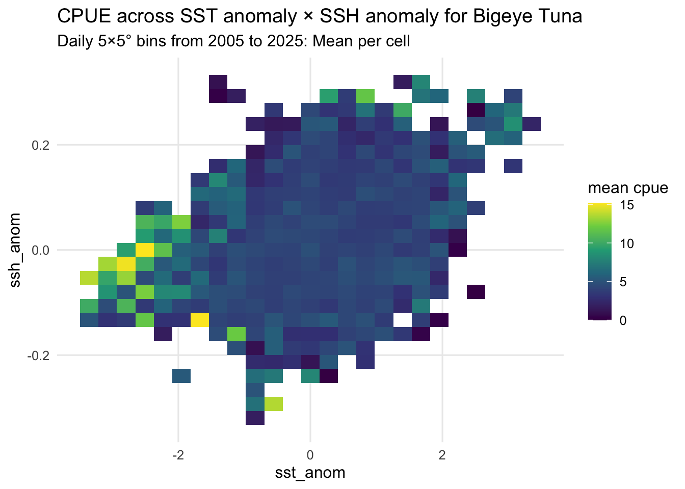

library(here)
library(tidyverse)
library(lubridate)
library(rlang)Week 10 Homework
Purpose
The goal of my overall project is to explore how environmental variability influences catch-per-unit-effort (CPUE) for bigeye tuna (Thunnus obesus) in the Hawaiʻi deep-set longline fishery. This document has two main goals:
Create a reusable non-plot function (
make_anomaly()) that calculates environmental anomalies — deviations of variables like sea surface temperature (SST) or sea surface height (SSH) from their long-term monthly climatology. This helps identify how “unusual” ocean conditions may relate to fishing success.Develop a plot function (
plot_response_surface()) that visualizes how CPUE responds to combinations of environmental anomalies, using a two-dimensional color surface to highlight patterns in catchability under different ocean states.
Libraries
Data
To protect confidential data, all sets were aggregated into 5×5° latitude–longitude bins (0–360° longitude) and only cells with three or more unique permits per day were retained.
It includes the following key variables:
| Variable | Description |
|---|---|
date |
Date of set (daily resolution). |
year |
Year extracted from date. |
set_type, species |
Longline set information (e.g., DSLL for deep-set, BET for bigeye tuna). |
lon_bin, lat_bin |
Lower-left (southwest) corner of each 5×5° spatial bin (0–360° longitude). |
lon_ctr, lat_ctr |
Center coordinates of the 5×5° cell, used for mapping and plotting. |
n_perm |
Number of unique permits (captains) per day × 5×5° cell; only bins with ≥3 are kept. |
catch_count, num_hks_set |
Total number of fish caught and hooks set per day × cell (summed across sets). |
cpue |
Catch per unit effort, calculated as fish per 1,000 hooks. |
sst, sss, ssh, mld, chl_cop |
Environmental variables (sea surface temperature, salinity, height, mixed layer depth, and chlorophyll concentration). |
u, v, current_speed, rugosity |
Oceanographic and seafloor variables: zonal and meridional currents, current speed, and bottom roughness. |
lunar_rad |
Lunar irradiance index for the date. |
ssh_sd, sss_sd, sst_sd |
Daily within-bin variability (standard deviation) for each corresponding variable. |
Load in Df
Binned_Bigeye <- readRDS(here("Week_10", "Data", "Binned_Bigeye.rds"))Function
Non-Plot Function
# Compute cellxmonth anomalies for any variable using baseline years of 2005:2014
make_anomaly <- function(df, var, ref_years = 2005:2014) {
# df: daily, 5x5 binned data
# var: string name of the environmental variable (e.g., "sst", "ssh", "sss")
# ref_years: baseline years for the monthly climatology
stopifnot(is.data.frame(df)) # stop if df isn't a data frame, important for replication
need <- c("date", "lon_ctr", "lat_ctr", var) # columns required for this calculation
miss <- setdiff(need, names(df)) # find any missing required columns
if (length(miss)) stop("Missing columns: ", # if it fails it will tell you
paste(miss, collapse = ", "))
# add time keys to build monthly climatology
data_with_timekeys <- df %>%
mutate(
year = year(date), # extract year from date
month = month(date) # extract month
)
# compute baseline climatology: mean(var) per cell x month over ref_years
cell_month_climatology <- data_with_timekeys %>%
filter(year %in% ref_years) %>% # keep only baseline years
group_by(lon_ctr, lat_ctr, month) %>% # group by spatial cell and month
summarise(
clim = mean(.data[[var]], na.rm = TRUE), # monthly mean of the chosen variable
.groups = "drop" # return an ungrouped tibble
)
# join baseline back to all rows and compute anomaly
data_with_anomaly <- data_with_timekeys %>%
left_join(cell_month_climatology, # bring back in the matching climatology
by = c("lon_ctr", "lat_ctr", "month")) %>%
mutate(
!!paste0(var, "_anom") := .data[[var]] - clim # anomaly = value - climatology
) %>%
select(-clim) # drop the helper column
return(data_with_anomaly) # return original rows + new "<var>_anom"
}Example
# Add anomolies for sst
Binned_Bigeye <- make_anomaly(Binned_Bigeye, var = "sst")
# Add anomolies for ssh
Binned_Bigeye <- make_anomaly(Binned_Bigeye, var = "ssh")
# Always look at data
glimpse(Binned_Bigeye)Rows: 26,059
Columns: 28
$ date <date> 2005-01-03, 2005-01-03, 2005-01-03, 2005-01-03, 2005-01…
$ year <dbl> 2005, 2005, 2005, 2005, 2005, 2005, 2005, 2005, 2005, 20…
$ set_type <chr> "DSLL", "DSLL", "DSLL", "DSLL", "DSLL", "DSLL", "DSLL", …
$ species <chr> "Thunnus obesus", "Thunnus obesus", "Thunnus obesus", "T…
$ lon_bin <dbl> 200, 200, 200, 200, 200, 200, 200, 200, 205, 200, 205, 2…
$ lat_bin <dbl> 15, 15, 15, 15, 15, 15, 15, 15, 20, 15, 20, 15, 20, 15, …
$ lon_ctr <dbl> 202.5, 202.5, 202.5, 202.5, 202.5, 202.5, 202.5, 202.5, …
$ lat_ctr <dbl> 17.5, 17.5, 17.5, 17.5, 17.5, 17.5, 17.5, 17.5, 22.5, 17…
$ n_perm <int> 4, 4, 4, 4, 3, 3, 3, 4, 3, 4, 3, 4, 3, 4, 3, 3, 3, 3, 3,…
$ catch_count <dbl> 6, 11, 8, 11, 17, 6, 15, 7, 12, 18, 19, 11, 21, 19, 11, …
$ num_hks_set <int> 2448, 1582, 2104, 2020, 1549, 2223, 2702, 1504, 1532, 22…
$ cpue <dbl> 2.450980, 6.953224, 3.802281, 5.445545, 10.974822, 2.699…
$ sst <dbl> 25.45414, 26.06690, 25.27542, 25.13377, 26.04229, 25.590…
$ sss <dbl> 34.25886, 34.90524, 34.60005, 35.05264, 34.91653, 34.570…
$ ssh <dbl> 0.5984069, 0.7074801, 0.5403607, 0.7184667, 0.7002777, 0…
$ mld <dbl> 10.52889, 75.89954, 10.52889, 46.57125, 83.46813, 11.108…
$ chl_cop <dbl> 0.05018057, 0.11400808, 0.05801880, 0.07613860, 0.093353…
$ u <dbl> -0.103152562, 0.113284707, -0.080935087, 0.037598804, 0.…
$ v <dbl> 0.037598804, -0.072756127, -0.059694204, -0.041138951, -…
$ rugosity <dbl> 28.33749, 57.14508, 204.01096, 422.63383, 82.56709, 395.…
$ current_speed <dbl> 0.11021017, 0.13910348, 0.10935427, 0.11959914, 0.145558…
$ lunar_rad <dbl> 4.7058935, 4.7058935, 4.7058935, 4.7058935, 4.9186622, 4…
$ ssh_sd <dbl> 0.007849832, 0.008216455, 0.008101955, 0.005983125, 0.00…
$ sss_sd <dbl> 0.07975624, 0.01276128, 0.11796053, 0.06192722, 0.012301…
$ sst_sd <dbl> 0.11560746, 0.06195435, 0.06083976, 0.18206321, 0.085152…
$ month <dbl> 1, 1, 1, 1, 1, 1, 1, 1, 1, 1, 1, 1, 1, 1, 1, 1, 1, 1, 1,…
$ sst_anom <dbl> -0.06730293, 0.54545991, -0.24601933, -0.38767404, 0.520…
$ ssh_anom <dbl> -0.005077452, 0.103995700, -0.063123657, 0.114982364, 0.…Plot Function
# Visualize mean z (CPUE) across X and Y (e.g., sst_anom x ssh_anom)
plot_cpue_heatmap <- function(df,
x, # column for x axis
y, # columns for y axis
z = "cpue", # column to fill that defaults to cpue
bins = 25, # number of bins in each dimension
fun = mean, # default summary function for z in each bin
na_rm = TRUE) {
stopifnot(is.data.frame(df)) # # stop if df isn't a data frame, important for replication
for(col in c(x, y, z)) if (!col %in% names(df)) stop("Missing column:", col) # if it fails it will tell you
plot <- ggplot(df, aes(x = .data[[x]],
y = .data[[y]])) +
stat_summary_2d(aes(z = .data[[z]]),
bins = bins, # resolution
fun = fun, # summarizing function
na.rm = na_rm) + # drop any NA Z values
scale_fill_viridis_c(
name = paste("mean", z), # legend title
option = "D") + # viridis pallete variation
# Axis labela and plot title
labs(
x = x, # label the x and y axis with the same string that was put in
y = y) +
theme_minimal(base_size = 12) + # Minimal theme for a clean look
theme(panel.grid.minor = element_blank()) # Remove minor grid lines so the heatmap tiles are clearer
plot
}Example Plot
CPUE_sst_ssh_anom_plot <- plot_cpue_heatmap(Binned_Bigeye,
x = "sst_anom",
y = "ssh_anom",
z = "cpue") +
labs(title = "CPUE across SST anomaly × SSH anomaly for Bigeye Tuna",
subtitle = "Daily 5×5° bins from 2005 to 2025: Mean per cell")
CPUE_sst_ssh_anom_plot
# save
ggsave(ggsave(here("Week_10", "Output", "CPUE_sst_ssh_anom_plot.png"),
CPUE_sst_ssh_anom_plot,
width = 8,
height = 5,
dpi = 300))